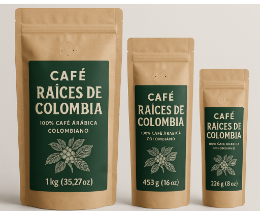

1 · Almacenamiento
Guardado con cuidado
Las familias aliadas entregan el café pergamino seco en la planta y registramos el lote. El pergamino se guarda en un silo con capacidad de 3.000 kg y el producto terminado, en un área seca y ventilada.
Todo pasa por nuestra planta en Popayán: desde ahí guardamos, tostamos, alistamos y despachamos cada pedido a todo el país.
1 · Almacenamiento
Las familias aliadas entregan el café pergamino seco en la planta y registramos el lote. El pergamino se guarda en un silo con capacidad de 3.000 kg y el producto terminado, en un área seca y ventilada.
2 · Tostión según la demanda
Trillamos y tostamos por lotes según los pedidos y las suscripciones activas, para que ningún pedido salga con más de 15 días de tostado. El inventario se descuenta con cada venta.
3 · Alistamiento
Alistamos cada pedido según la presentación y la molienda, lo sellamos al vacío en bolsa con válvula y lo embalamos en caja de cartón reciclable, con la factura electrónica y una tarjeta de la familia productora.
4 · Despacho
Enviamos con una transportadora nacional que ofrece número de guía y seguimiento en línea y, donde es posible, recaudo contra entrega. Las primeras campañas se concentran en el Valle del Cauca (Palmira y Cali).
Transportadora: [POR CONFIRMAR]
5 · Entrega
Te enviamos el número de guía por correo y por WhatsApp para que rastrees tu pedido hasta la entrega.
Tiempos de entrega: [POR CONFIRMAR] · Costo de envío: [POR CONFIRMAR]
6 · Devoluciones
Si el empaque llega dañado o el producto no cumple nuestros estándares, te lo reponemos o te devolvemos el dinero sin costo. Además, tienes derecho de retracto dentro de los 5 días hábiles siguientes a la entrega (Ley 1480 de 2011, art. 47).
Cómo hacerlo: escríbenos por WhatsApp con tu número de pedido y una foto del empaque. Ver la política completa.
Logística verde
Cuidar el lugar de donde viene el café también es parte de nuestro trabajo.

Usamos bolsa pouch de papel kraft con válvula unidireccional y sellado al vacío: la válvula deja salir los gases que libera el café recién tostado sin que entre el aire.
La etiqueta indica la marca, el peso y el tipo de café, y tendrá la variedad, el proceso, la fecha de tueste, el número de lote y un código QR que te lleva a la ficha de origen.